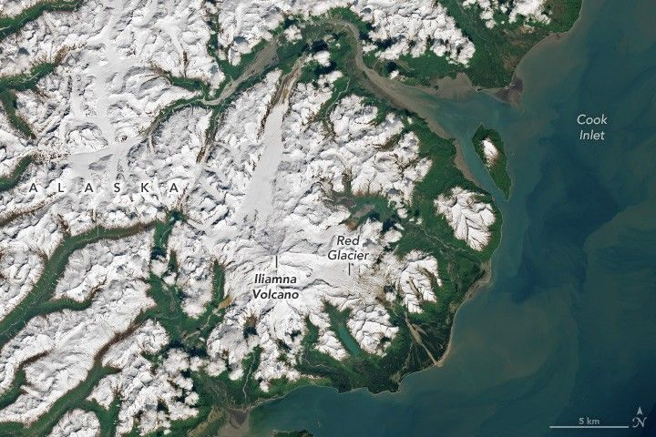

Iliamna Volcano Ready to Rumble
Towering more than 10,000 feet (3,000 meters) over Cook Inlet, Alaska’s Iliamna Volcano last erupted in 1867. Once every couple of years, however, the mountain still rumbles. Its murmurs tend not to be signs of volcanic unrest but rather the signature of avalanches large enough to register on nearby seismic and infrasound instruments.
The OLI (Operational Land Imager) on Landsat 8 acquired this image of Iliamna Volcano on June 10, 2025. The glacier-covered peak lies about 130 miles (210 kilometers) southwest of Anchorage and 30 miles (50 kilometers) southwest of its more eruptive neighbor, Redoubt Volcano. Both are located within Lake Clark National Park and Preserve. Deep, U-shaped valleys carved by glaciers radiate from Iliamna down toward the sea. South of its summit, Chinitna Bay is known for its brown bear viewing opportunities.
A flurry of shaking rattled Iliamna a few days after this image was captured, according to the Alaska Volcano Observatory (AVO). Seismic activity picked up at about 4:30 a.m. local time on June 15 and ramped up to a “nearly continuous” rate, the AVO reported. It slowed to a cadence of about one seismic event per minute and then returned to background levels around 2:30 p.m.
The AVO did not have enough information as of June 16 to determine the size and location of any slide that may have occurred that day. However, the signals they recorded were similar to those caused by the initial slipping between rock and ice that preceded large avalanches on the volcano in the past, they said.
The snow-covered Iliamna Volcano appears in the distance in this photograph, and the Red Glacier flows into a valley in the foreground. One slope of the mountain is covered in rocky debris. The valley is mostly free of vegetation and is full of hummocky piles of tan, reddish, and dark brown rock or soil.
A couple of those recent events, in May 2016 and June 2019, began near the top of the Red Glacier on the eastern side of the mountain. The Red Glacier, shown in the photo above in summer 2023, is the second largest of the mountain’s 10 glaciers. Avalanche debris during both events traveled approximately 5 miles (8 kilometers) down the valley at a mean speed of about 110 miles (180 kilometers) per hour, scientists estimated.
Glacial ice, hydrothermally altered and weakened rock, and volcanic heat combine to create conditions for massive slides on Iliamna’s slopes. The frequency of the large ice and rock avalanches seen at this volcano is unusual, researchers say, but offers a natural laboratory for understanding the mechanics and precursors of this type of event. Iliamna is remote, but similar conditions in more populated ranges around the planet could pose hazards to communities.